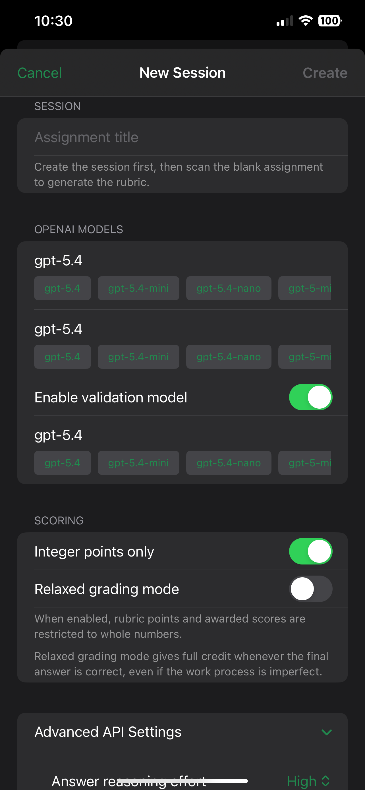
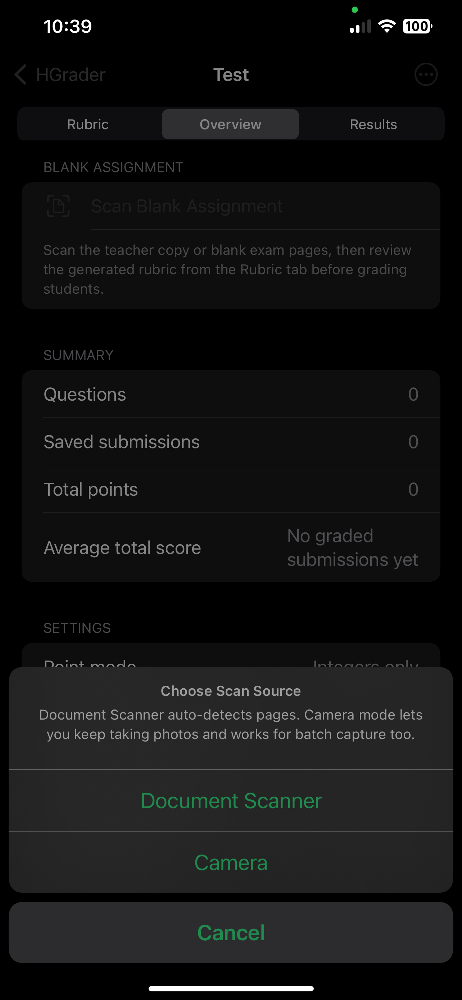
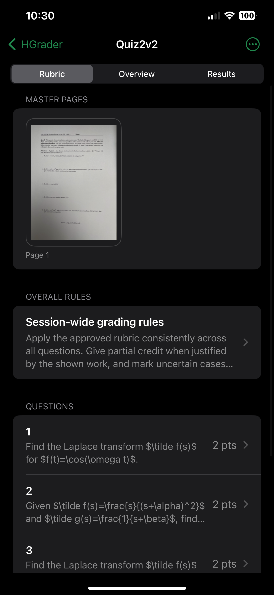
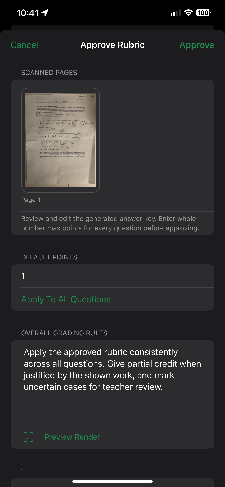
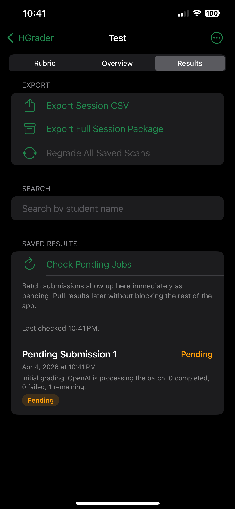
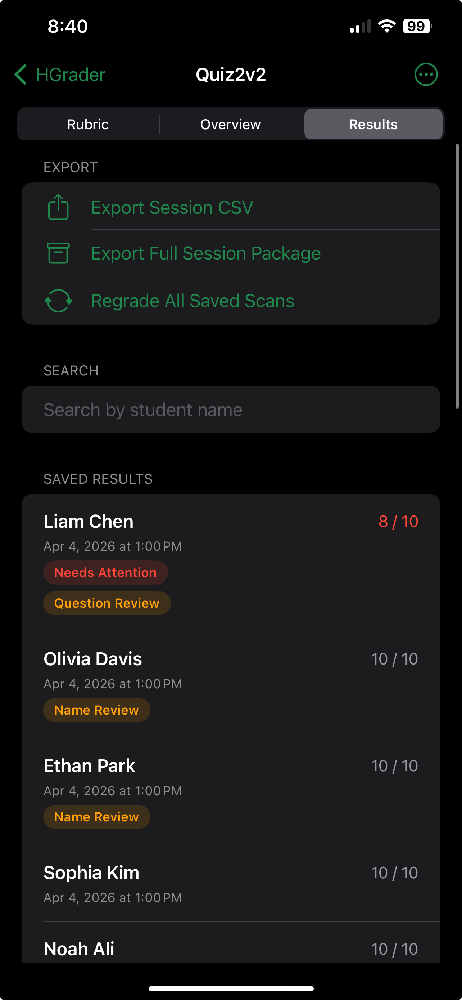
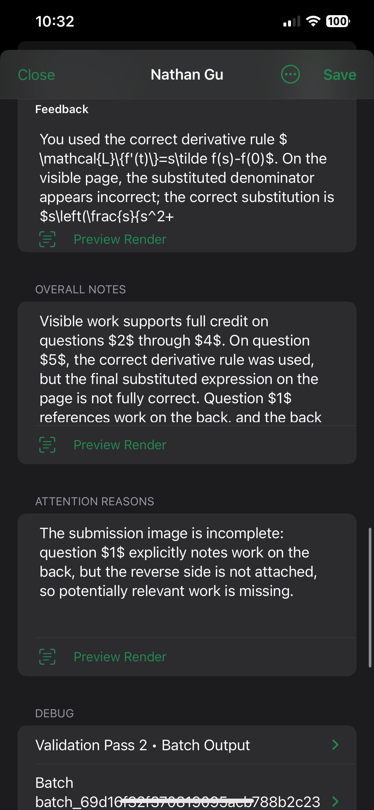

End-to-End Grading Workflow
The complete process from collecting paper assignments to published grades in Canvas LMS.
Overview
The grading pipeline has three phases. HGrader handles Phase 1 on your iPhone. You transfer the results in Phase 2. CanvasConnect handles Phase 3 on your computer.
Grade
HGrader on iPhone
Transfer
Export → your computer
Publish
CanvasConnect → Canvas
Phase 1: Grading with HGrader
This phase takes place entirely on your iPhone.
Step 1.1 — Create a Session
Open HGrader and create a new grading session. Select the AI models for rubric generation and grading. Enable validation if you want a second-pass accuracy check.

Step 1.2 — Scan the Master Copy
Scan the blank (or completed) assignment. This is the reference document the AI uses to generate the rubric. Use good lighting and capture all pages.

Select scan method

Camera capture
Step 1.3 — Generate and Review the Rubric
The AI analyzes the master copy and produces a structured rubric. Switch to the Rubric tab to review:
- Verify that all questions are identified
- Check point values match the assignment
- Review expected answers for accuracy
- Edit anything that needs correction

Rubric view

Approve rubric
Step 1.4 — Scan and Grade Student Work
Choose single-student or batch mode:
- Single mode: Scan one student's pages, enter their name, submit for grading. Repeat per student.
- Batch mode: Scan all papers at once. HGrader prompts you to separate and name each student's work. Grading proceeds in the background.

Step 1.5 — Review Results
In the Results tab, review each student's scores:
- Check per-question scores and reasoning
- Adjust any scores that need manual correction
- Verify total scores make sense

Results overview

Question details
Phase 2: Export and Transfer
Step 2.1 — Export the Session Package
In the Overview tab, tap Export Full Session Package. HGrader creates a ZIP file containing all session data, scores, and scan images.
Step 2.2 — Transfer to Your Computer
Use the iOS share sheet to send the ZIP to your computer:
- AirDrop — fastest for Mac users
- Files / iCloud — syncs automatically
- Email — works for smaller sessions
Step 2.3 — Extract the Export
Unzip the package to a folder on your computer. CanvasConnect expects the extracted folder, not the ZIP file.
Phase 3: Publishing with CanvasConnect
Step 3.1 — Prepare Canvas
In Canvas LMS:
- Create an assignment with File Uploads as the submission type (if you want PDF uploads).
- Keep the assignment unpublished until after uploads are complete.
- Generate a Canvas API token from Account → Settings → New Access Token.
Step 3.2 — Configure CanvasConnect
# Set up configuration
cp config.example.toml config.toml
# Edit config.toml with your Canvas URL, course ID, assignment ID
# Set your API token
export CANVAS_API_TOKEN="your-token"Step 3.3 — Run the Pipeline
./canvas-connect runThe pipeline will:
Parse
Read exports, build PDFs
Roster
Load Canvas students
Match
Map names to roster
Post
Grades + PDFs to Canvas
Step 3.4 — Verify in Canvas
After the pipeline completes:
- Open the assignment in Canvas SpeedGrader
- Verify that grades and PDFs are attached correctly
- Publish the assignment when ready
- Post grades to make them visible to students
Tips and Best Practices
run for subsequent assignments.
Timing Recommendations
- Scanning + grading (HGrader): ~2–5 minutes per 10 students (batch mode)
- Rubric review: 2–5 minutes per assignment
- CanvasConnect pipeline: 1–3 minutes (depending on class size and network speed)
- Total: A class of 30 students can go from paper to Canvas in under 15 minutes